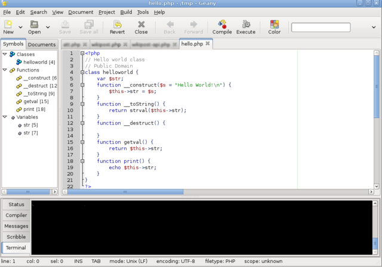

Geany
Las aplicaciones para el desarrollo se denominan IDE (Interfaz de entorno de desarrollo)
Geany es un editor de texto reducido y ligero basado en Scintilla con características basicas de entorno de desarrollo integrado.
Utiliza bibliotecas GTK para su funcionamiento. Esta disponible para distintos sistemas operativos, como GNU/Linux, Mac OS X, BSD, Solaris y Microsoft Windows
Las caracteristicas que tiene son;
- Resaltado de sintaxis
- Plegado de codigo.
- Autocompletado
- Cierre automatico de etiquetas XML y HTML.
- Muestra de consejos.
- Muchos tipos de archivos soportados tales como C, C++, Java, PHP, Python, Perl entre otros mas
- Listas de simbolos.
- Terminal embebido.
- Codigo de navegación.
- Construir un sistema (conjunto de ejecuciones) para compilar y ejecutar el codigo
- Facil gestion de proyectos.
- Soporte para plugins
Es distribuido como software libre bajo la Licencia Pública General de GNU.
 Index
Index Retorno
Retorno